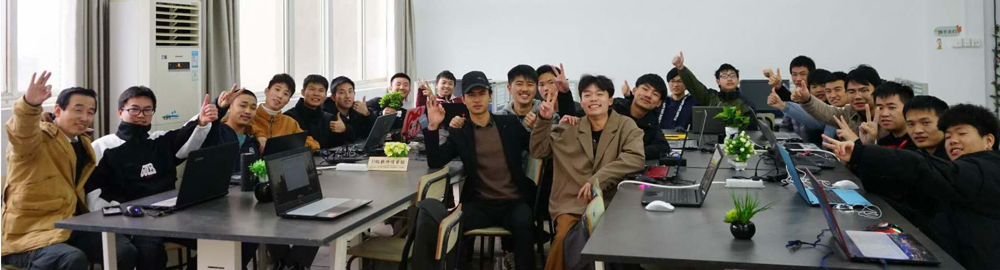
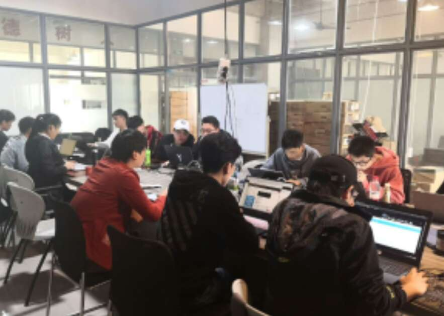

软件工程学院现有在校生2000余人。开设本科专业4个，即：软件工程、智能控制技术、计算机应用工程、大数据技术与应用；开设了专科专业5个，即：软件技术、嵌入式技术与应用、人工智能技术服务、工业机器人技术、大数据技术与应用。 软件技术专业根据市场用人需求，设置了五个专业方向，即（软件技术(Web软件设计)、软件技术(移动互联网开发技术)、软件技术(网络游戏开发方向) 、软件技术(软件测试方向) 、软件技术（Ui设计）等）。 学院共有专任教师74名（不含思政部和基础教学部），其中正高职称 8 人，占总数的10.1%、副高职称13人，占总数的17.8%，中级职称24人，占总数的32.8%。具有硕士学位以上的21人，占总数的28.8%，本科以上学历的52人，占总数的70%。有江西省中青年学科带头人1名，江西省高校中青年骨干教师2名。


2020年10月24日，江西软件职业技术大学区块链活动节隆重启幕。 此次区块链活动节是学习习近平总书记“10·24”讲话精神的重要活动，是先锋软件集团和江西软件大学自2015年来，在区块链领域探索出的具有纪念意义的活动，它生动地诠释了江西软件大学“学习的先锋、运动的先锋、快乐的先锋、创新的先锋”的校园文化精神。 去年的今天，习近平总书记主持中央政治局第十八次集体学习“区块链技术与发展趋势”并作了重要讲话，指出了区块链技术的集成应用在新的技术革新和产业变革中起着重要作用，强调了要把区块链作为核心技术自主创新的重要突破口，加快推动区块链技术和产业创新发展。

网络工程学院成立于2005年8月，是江西软件职业技术大学最具活力的二级学院之一。目前开设有网络工程、通信工程、信息安全与管理、导航工程四个本科专业，计算机网络技术、信息安全与管理、通信技术、云计算应用技术、工程造价、城市轨道交通运营管理等六个高职专业，在校生1800余人。 学院师资力量较强，现有专兼职教师86人，其中教授7人，副教授 13人，高级工程师17人，双师型素质老师占专任教师比例达58.1%。 学院遵循以培养学生职业能力为宗旨，以就业为导向，以能力为本位，以开放为特色的培养理念。 创新人才培养模式，与行业顶尖企业合作，已建立了 “思科网络技术学院”、“华为ICT学院”、“启明星辰网络空间安全学院”。 现有网络攻防实验室、云安全实验室、SDL安全实验室、通信技术专业实验室、计算机网络技术实训室、能源互联网研发中心等26个能满足各专业实践教学的实验、实训场所。 近年来，学生连续三年获得江西省大学生信息安全技术大赛团体总分第一名，获得江西省第十届蓝桥杯（Java软件开发）大赛一等奖，全国第十届蓝桥杯（Java软件开发）二等奖，2019年江西省教育系统网络安全技能大赛团。
江西软件职业技术大学是经国家教育部批准设置的全日制统招本科高校，是全国第一所软件职业技术大学，由国家软件百强企业先锋软件股份有限公司于2003年创办，成立之初就成功入选全国35所示范性软件职业技术学院。 2018年12月18日，教育部批准学校升格为本科层次职业学校，成为全国首批15所本科层次职业教育高校。 2019年5月27日，教育部批复更名为江西软件职业技术大学。
经济管理学院现已开设两个本科专业：电子商务、会计，三个专科专业：电子商务、会计、学前教育。 近年来，我院师生多次参加全国大学生广告艺术大赛、江西省艺德杯大中小学师生作品大赛、华东交大杯文化创意设计大赛等省内外各项大赛，并取得一定成绩，其中特等奖5项、一等奖46项、二等奖90余项、三等奖280余项。 学院现有15个专业实训工作室、15间多媒体网络教室及16个校外实践教学、实习基地。 经济管理学院作为江西软件大学特色学院之一，秉承“创业创新、知识管理”的校训，实施“校企融合、产学互动”的办学模式，实践“三好一专、十一工程”人才培养体系。 结合我校已有的信息工程学科优势，使艺术与互联网、经管与互联网相互融合。坚持“校企合作、产学互动、突出特色”，构筑起与应用型人才培养相适应的学科体系和专业设置。 立足江西、面向全国，逐步形成以数字化为特色的学科优势。在办学思路上采取的培养模式：实施模块化培养、单元式授课；教学模式：采用工作室制教学模式，以专业工作室为依托，将专业课程教学内容与社会设计项目相结合，学生在专业教师和校外专家的带领和指导下，在工作室内完成课程学习和实践锻炼任务，从而达到提高学生实践动手能力。